Pip explains each idea in small steps
Every school year is its own adventure, with its own map. In Year 1, children tap a place, learn the idea with Pip, then have a go. There is a hint when they need one, and right answers earn feathers and stars.
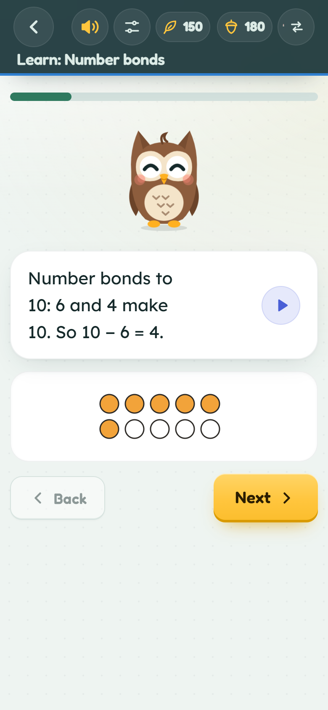
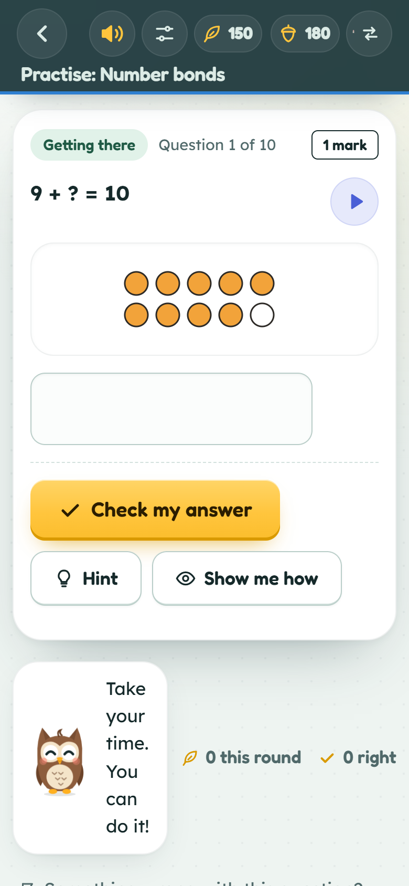
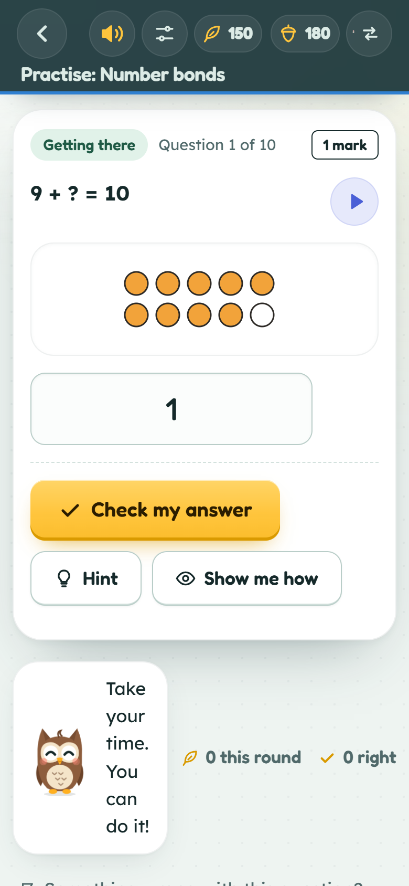
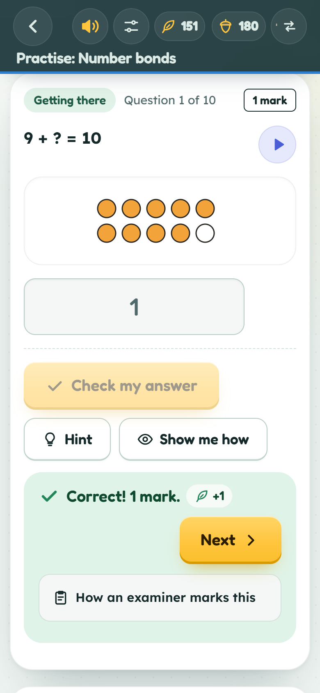
By Year 11, it is marked like a GCSE
Every GCSE topic is here, at Foundation and Higher tier. Questions carry marks, a calculator is there when one is allowed, and children can see how an examiner would mark each one. Practice papers follow your exam board’s layout.
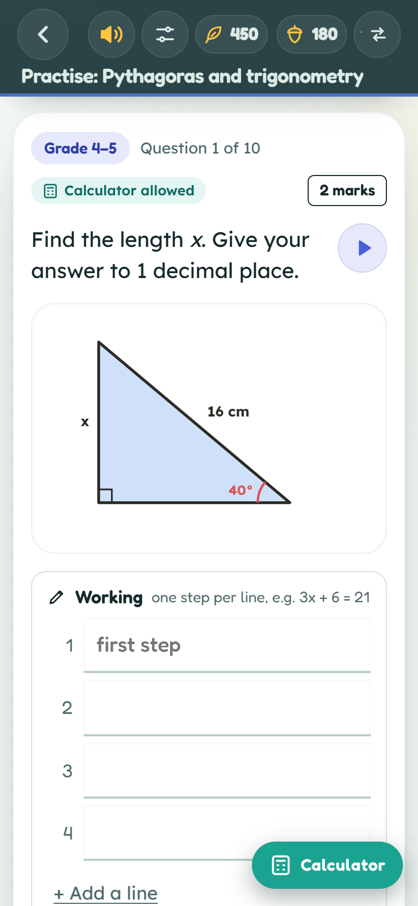
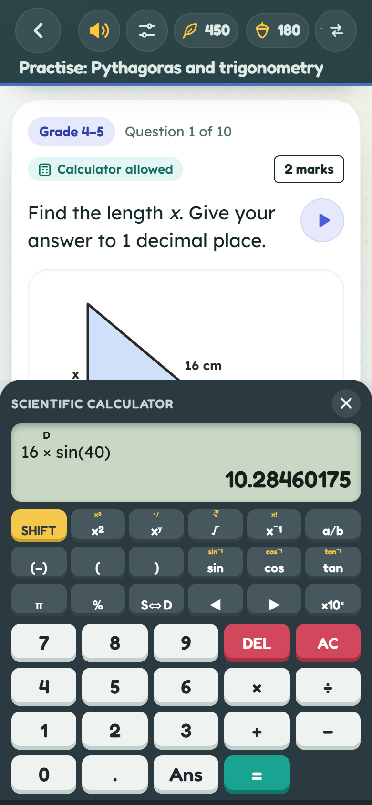
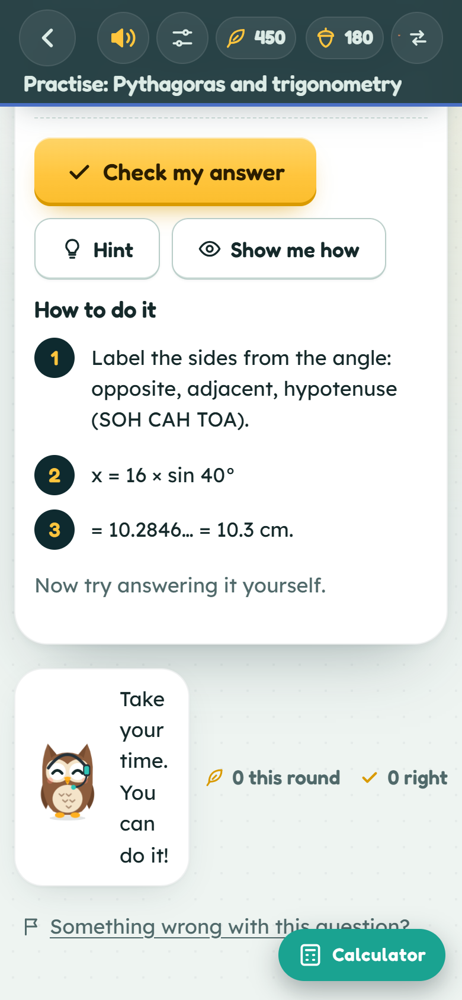
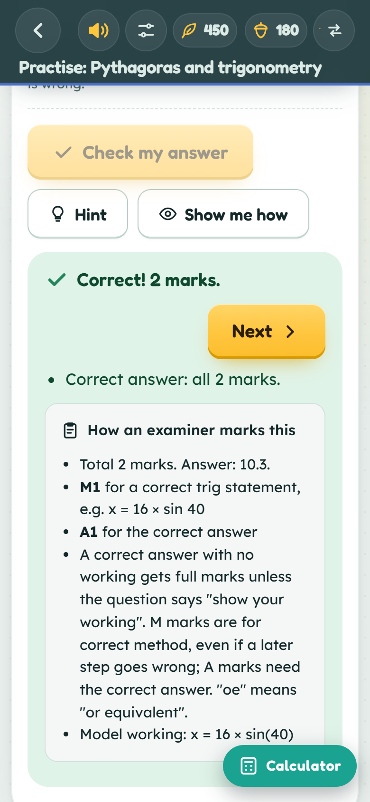
Practice earns acorns, and a finished year earns a certificate
Acorns are spent in the dressing-up chest, on outfits for each child’s own animal. Pass the year’s final practice papers and there is a certificate to print, with their top skills and stars.
Certificate shown for an example child.
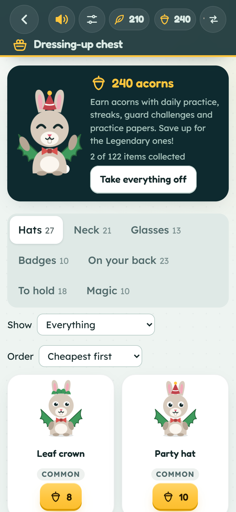
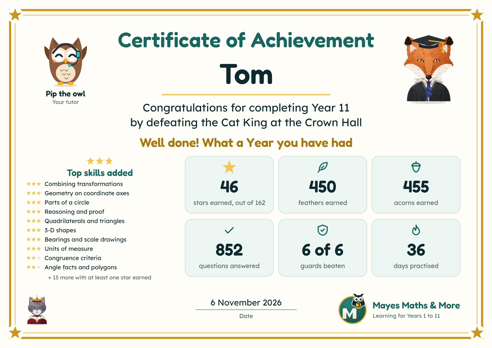
Grown-ups can see what is working
The grown-ups’ area has its own PIN. It shows how each child is improving week by week and which topics are worth more practice, and you can set play time limits for each child.
Screens shown for an example child.
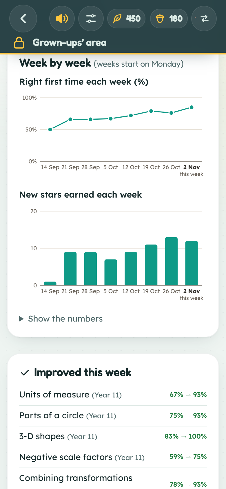
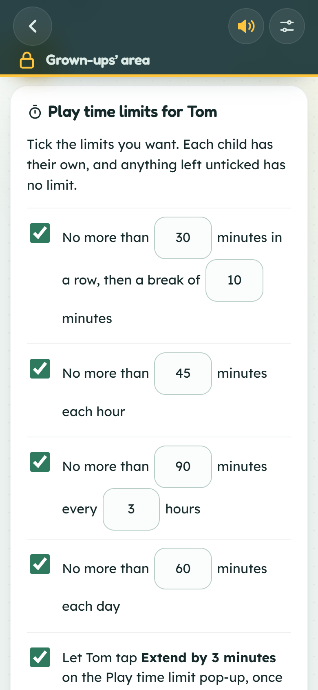
Free to download, and free thereafter
- No in-app purchases
- No adverts
- No accounts or sign-ups
- Works without the internet once installed
- Nothing about your child leaves the device
Made to help children learn, not to make money.